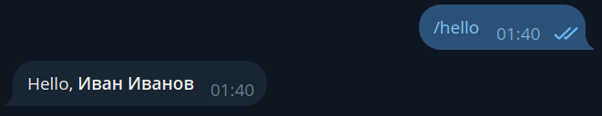
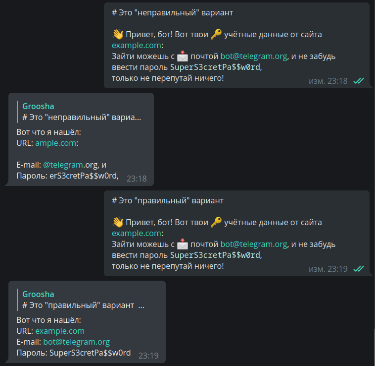
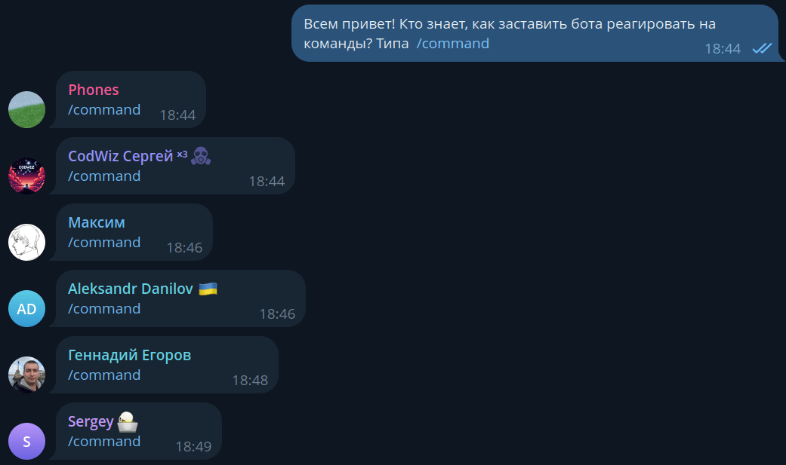

Работа с сообщениями¶
Используемая версия aiogram: 3.1.1
В этой главе мы разберёмся, как применять различные типы форматирования к сообщениям и работать с медиафайлами.
Текст¶
Обработка текстовых сообщений — это, пожалуй, одно из важнейших действий у большинства ботов. Текстом можно выразить практически что угодно и при этом подавать информацию хочется красиво. В распоряжении у разработчика имеется три способа разметки текста: HTML, Markdown и MarkdownV2. Наиболее продвинутыми из них считаются HTML и MarkdownV2, «классический» Markdown поддерживает меньше возможностей и более не используется в aiogram.
Прежде, чем мы рассмотрим способы работы с текстом в aiogram, необходимо упомянуть важное отличие aiogram 3.x от 2.x: в «двойке» по умолчанию обрабатывались только текстовые сообщения, а в «тройке» — любого типа. Если точнее, вот как теперь надо принимать исключительно текстовые сообщения:
# было (декоратором)
@dp.message_handler()
async def func_name(...)
# было (функцией-регистратором)
dp.register_message_handler(func_name)
# стало (декоратором)
from aiogram import F
@dp.message(F.text)
async def func_name(...)
# стало (функцией-регистратором)
dp.message.register(func_name, F.text)
Про «магический фильтр» F мы поговорим в другой главе.
Форматированный вывод¶
За выбор форматирования при отправке сообщений отвечает аргумент parse_mode, например:
from aiogram import F
from aiogram.types import Message
from aiogram.filters import Command
from aiogram.enums import ParseMode
# Если не указать фильтр F.text,
# то хэндлер сработает даже на картинку с подписью /test
@dp.message(F.text, Command("test"))
async def any_message(message: Message):
await message.answer(
"Hello, <b>world</b>!",
parse_mode=ParseMode.HTML
)
await message.answer(
"Hello, *world*\!",
parse_mode=ParseMode.MARKDOWN_V2
)

Если в боте повсеместно используется определённое форматирование, то каждый раз указывать аргумент parse_mode довольно
накладно. К счастью, в aiogram можно передать необходимый тип прямо в объект Bot, а если в каком-то конкретном случае
нужно обойтись без этих ваших разметок, то просто укажите parse_mode=None:
bot = Bot(token="123:abcxyz", parse_mode="HTML")
# где-то в функции...
await message.answer("Сообщение с <u>HTML-разметкой</u>")
await message.answer(
"Сообщение без <s>какой-либо разметки</s>",
parse_mode=None
)

Экранирование ввода¶
Нередко бывают ситуации, когда окончательный текст сообщения бота заранее неизвестен
и формируется исходя из каких-то внешних данных: имя пользователя, его ввод и т.д.
Напишем хэндлер на команду /hello, который будет приветствовать пользователя по его полному имени
(first_name + last_name), например: «Hello, Иван Иванов»:
from aiogram.filters import Command
@dp.message(Command("hello"))
async def cmd_hello(message: Message):
await message.answer(
f"Hello, <b>{message.from_user.full_name}</b>",
parse_mode=ParseMode.HTML
)
И вроде всё хорошо, бот приветствует пользователей:

Но тут приходит юзер с именем <Cлавик777> и бот молчит! А в логах видно следующее:
aiogram.exceptions.TelegramBadRequest: Telegram server says - Bad Request: can't parse entities:
Unsupported start tag "Славик777" at byte offset 7
Упс, у нас стоит режим форматирования HTML, и Telegram пытается распарсить <Cлавик777> как HTML-тег. Непорядок. Но у этой проблемы есть несколько решений. Первое: экранировать передаваемые значения.
from aiogram import html
from aiogram.filters import Command
@dp.message(Command("hello"))
async def cmd_hello(message: Message):
await message.answer(
f"Hello, {html.bold(html.quote(message.from_user.full_name))}",
parse_mode=ParseMode.HTML
)
Второе чуть сложнее, но более продвинутое: воспользоваться специальным инструментом, который будет собирать отдельно текст и отдельно информацию о том, какие его куски должны быть отформатированы.
from aiogram.filters import Command
from aiogram.utils.formatting import Text, Bold
@dp.message(Command("hello"))
async def cmd_hello(message: Message):
content = Text(
"Hello, ",
Bold(message.from_user.full_name)
)
await message.answer(
**content.as_kwargs()
)
В примере выше конструкция **content.as_kwargs() вернёт аргументы text, entities, parse_mode и
подставит их в вызов answer().

Упомянутый инструмент форматирования довольно комплексный, официальная документация демонстрирует удобное отображение сложных конструкций, например:
from aiogram.filters import Command
from aiogram.utils.formatting import (
Bold, as_list, as_marked_section, as_key_value, HashTag
)
@dp.message(Command("advanced_example"))
async def cmd_advanced_example(message: Message):
content = as_list(
as_marked_section(
Bold("Success:"),
"Test 1",
"Test 3",
"Test 4",
marker="✅ ",
),
as_marked_section(
Bold("Failed:"),
"Test 2",
marker="❌ ",
),
as_marked_section(
Bold("Summary:"),
as_key_value("Total", 4),
as_key_value("Success", 3),
as_key_value("Failed", 1),
marker=" ",
),
HashTag("#test"),
sep="\n\n",
)
await message.answer(**content.as_kwargs())
Подробнее о различных способах форматирования и поддерживаемых тегах можно узнать в документации Bot API.
Сохранение форматирования¶
Представим, что бот должен получить форматированный текст от пользователя и добавить туда что-то своё, например, отметку времени. Напишем простой код:
# новый импорт!
from datetime import datetime
@dp.message(F.text)
async def echo_with_time(message: Message):
# Получаем текущее время в часовом поясе ПК
time_now = datetime.now().strftime('%H:%M')
# Создаём подчёркнутый текст
added_text = html.underline(f"Создано в {time_now}")
# Отправляем новое сообщение с добавленным текстом
await message.answer(f"{message.text}\n\n{added_text}", parse_mode="HTML")

Мда, что-то пошло не так, почему сбилось форматирование исходного сообщения?
Это происходит из-за того, что message.text возвращает просто текст, без каких-либо оформлений.
Чтобы получить текст в нужном форматировании, воспользуемся альтернативными свойствами:
message.html_text или message.md_text. Сейчас нам нужен первый вариант. Заменяем в примере
выше message.text на message.html_text и получаем корректный результат:

Работа с entities¶
Telegram сильно упрощает жизнь разработчикам, выполняя предобработку сообщений пользователей на своей стороне.
Например, некоторые сущности, типа e-mail, номера телефона, юзернейма и др. можно не доставать
регулярными выражениями, а извлечь
напрямую из объекта Message и поля
entities, содержащего массив объектов типа
MessageEntity. В качестве примера напишем
хэндлер, который извлекает ссылку, e-mail и моноширинный текст из сообщения (по одной штуке).
Здесь кроется важный подвох. Telegram возвращает не сами значения, а их начало в тексте и длину.
Более того, текст считается в символах UTF-8, а entities работают с UTF-16, из-за этого, если просто взять
позицию и длину, то при наличии UTF-16 символов (например, эмодзи) ваш обработанный текст просто съедет.
Лучше всего это демонстрирует пример ниже. На скриншоте первый ответ бота есть результат парсинга «в лоб»,
а второй — результат применения аиограмного метода extract_from() над entity. На вход ему передаётся весь исходный текст:
@dp.message(F.text)
async def extract_data(message: Message):
data = {
"url": "<N/A>",
"email": "<N/A>",
"code": "<N/A>"
}
entities = message.entities or []
for item in entities:
if item.type in data.keys():
# Неправильно
# data[item.type] = message.text[item.offset : item.offset+item.length]
# Правильно
data[item.type] = item.extract_from(message.text)
await message.reply(
"Вот что я нашёл:\n"
f"URL: {html.quote(data['url'])}\n"
f"E-mail: {html.quote(data['email'])}\n"
f"Пароль: {html.quote(data['code'])}"
)

Команды и их аргументы¶
Telegram предоставляет пользователям множество способов ввода
информации. Одним из них являются команды: ключевые слова, начинающиеся со слэша, например, /new или /ban.
Иногда бот может быть спроектирован так, чтобы ожидать после самой команды какие-то аргументы, вроде /ban 2d или
/settimer 20h This is delayed message. В составе aiogram есть фильтр Command(), упрощающий жизнь разработчика.
Реализуем последний пример в коде:
@dp.message(Command("settimer"))
async def cmd_settimer(
message: Message,
command: CommandObject
):
# Если не переданы никакие аргументы, то
# command.args будет None
if command.args is None:
await message.answer(
"Ошибка: не переданы аргументы"
)
return
# Пробуем разделить аргументы на две части по первому встречному пробелу
try:
delay_time, text_to_send = command.args.split(" ", maxsplit=1)
# Если получилось меньше двух частей, вылетит ValueError
except ValueError:
await message.answer(
"Ошибка: неправильный формат команды. Пример:\n"
"/settimer <time> <message>"
)
return
await message.answer(
"Таймер добавлен!\n"
f"Время: {delay_time}\n"
f"Текст: {text_to_send}"
)
Попробуем передать команду с разными аргументами (или вообще без них) и проверить реакцию:
С командами может возникнуть небольшая проблема в группах: Telegram автоматически подсвечивает команды, начинающиеся со слэша, из-за чего порой случается вот такое (спасибо моим дорогим подписчикам за помощь в создании скриншота):

Чтобы этого избежать, можно заставить бота реагировать на команды с другими префиксами. Они не будут подсвечиваться и потребуют полностью ручной ввод, так что сами оценивайте пользу такого подхода.
@dp.message(Command("custom1", prefix="%"))
async def cmd_custom1(message: Message):
await message.answer("Вижу команду!")
# Можно указать несколько префиксов....vv...
@dp.message(Command("custom2", prefix="/!"))
async def cmd_custom2(message: Message):
await message.answer("И эту тоже вижу!")
Проблема кастомных префиксов в группах только в том, что боты не-админы со включенным Privacy Mode (по умолчанию) могут не увидеть такие команды из-за особенностей логики сервера. Самый частый use-case — боты-модераторы групп, которые уже являются администраторами.
Диплинки¶
Существует одна команда в Telegram, у которой есть чуть больше возможностей. Это /start. Дело в том, что можно
сформировать ссылку вида t.me/bot?start=xxx и пре переходе по такой ссылке пользователю покажут кнопку «Начать», при
нажатии которой бот получит сообщение /start xxx. Т.е. в ссылке зашивается некий дополнительный параметр, не требующий
ручного ввода. Это называется диплинк (не путать с дикпиком) и может использоваться для кучи разных вещей: шорткаты для
активации различных команд, реферальная система, быстрая конфигурация бота и т.д. Напишем два примера:
import re
from aiogram import F
from aiogram.types import Message
from aiogram.filters import Command, CommandObject, CommandStart
@dp.message(Command("help"))
@dp.message(CommandStart(
deep_link=True, magic=F.args == "help"
))
async def cmd_start_help(message: Message):
await message.answer("Это сообщение со справкой")
@dp.message(CommandStart(
deep_link=True,
magic=F.args.regexp(re.compile(r'book_(\d+)'))
))
async def cmd_start_book(
message: Message,
command: CommandObject
):
book_number = command.args.split("_")[1]
await message.answer(f"Sending book №{book_number}")

Учтите, что диплинки через start отправляют пользователя в личку с ботом. Чтобы выбрать группу и отправить диплинк туда,
замените start на startgroup. Также у aiogram существует удобная
функция
для создания диплинков прямо из вашего кода.
Больше диплинков, но не для ботов
В документации Telegram есть подробное описание всевозможных диплинков для клиентских приложений: https://core.telegram.org/api/links
Медиафайлы¶
Отправка файлов¶
Помимо обычных текстовых сообщений Telegram позволяет обмениваться медиафайлами различных типов: фото, видео, гифки,
геолокации, стикеры и т.д. У большинства медиафайлов есть свойства file_id и file_unique_id. Первый можно использовать
для повторной отправки одного и того же файла много раз, причём отправка будет мгновенной, т.к. сам файл уже лежит
на серверах Telegram. Это самый предпочтительный способ.
К примеру, следующий код заставит бота моментально ответить пользователю той же гифкой, что была прислана:
@dp.message(F.animation)
async def echo_gif(message: Message):
await message.reply_animation(message.animation.file_id)
Всегда используйте правильные file_id!
Бот должен использовать для отправки только те file_id, которые получил напрямую сам,
например, в личке от пользователя или «увидев» медиафайл в группе/канале. При этом,
если попытаться использовать file_id от другого бота, то это может сработать, но
через какое-то время вы получите ошибку wrong url/file_id specified. Поэтому —
только свои file_id!
В отличие от file_id, идентификатор file_unique_id нельзя использовать для повторной отправки
или скачивания медиафайла, но зато он одинаковый у всех ботов для конкретного медиа.
Нужен file_unique_id обычно тогда, когда нескольким ботам требуется знать, что их собственные file_id односятся
к одному и тому же файлу.
Если файл ещё не существует на сервере Telegram, бот может загрузить его тремя различными
способами: как файл в файловой системе, по ссылке и напрямую набор байтов.
Для ускорения отправки и в целом для более бережного отношения к серверам мессенджера,
загрузку (upload) файлов Telegram правильнее производить один раз, а в дальнейшем использовать file_id,
который будет доступен после первой загрузки медиа.
В aiogram 3.x присутствуют 3 класса для отправки изображений - FSInputFile, BufferedInputFile,
URLInputFile, с ними можно ознакомиться
в документации.
Рассмотрим простой пример отправки изображений всеми различными способами:
from aiogram.types import FSInputFile, URLInputFile, BufferedInputFile
@dp.message(Command('images'))
async def upload_photo(message: Message):
# Сюда будем помещать file_id отправленных файлов, чтобы потом ими воспользоваться
file_ids = []
# Чтобы продемонстрировать BufferedInputFile, воспользуемся "классическим"
# открытием файла через `open()`. Но, вообще говоря, этот способ
# лучше всего подходит для отправки байтов из оперативной памяти
# после проведения каких-либо манипуляций, например, редактированием через Pillow
with open("buffer_emulation.jpg", "rb") as image_from_buffer:
result = await message.answer_photo(
BufferedInputFile(
image_from_buffer.read(),
filename="image from buffer.jpg"
),
caption="Изображение из буфера"
)
file_ids.append(result.photo[-1].file_id)
# Отправка файла из файловой системы
image_from_pc = FSInputFile("image_from_pc.jpg")
result = await message.answer_photo(
image_from_pc,
caption="Изображение из файла на компьютере"
)
file_ids.append(result.photo[-1].file_id)
# Отправка файла по ссылке
image_from_url = URLInputFile("https://picsum.photos/seed/groosha/400/300")
result = await message.answer_photo(
image_from_url,
caption="Изображение по ссылке"
)
file_ids.append(result.photo[-1].file_id)
await message.answer("Отправленные файлы:\n"+"\n".join(file_ids))
Скачивание файлов¶
Помимо переиспользования для отправки, бот может скачать медиа к себе на компьютер/сервер. Для этого у объекта типа Bot
есть метод download(). В примерах ниже файлы скачиваются сразу в файловую систему, но никто не мешает
вместо этого сохранить в объект BytesIO в памяти, чтобы передать в какое-то приложение дальше
(например, pillow).
@dp.message(F.photo)
async def download_photo(message: Message, bot: Bot):
await bot.download(
message.photo[-1],
destination=f"/tmp/{message.photo[-1].file_id}.jpg"
)
@dp.message(F.sticker)
async def download_sticker(message: Message, bot: Bot):
await bot.download(
message.sticker,
# для Windows пути надо подправить
destination=f"/tmp/{message.sticker.file_id}.webp"
)
В случае с изображениями мы использовали не message.photo, а message.photo[-1], почему?
Фотографии в Telegram в сообщении приходят сразу в нескольких экземплярах; это одно и то же
изображение с разным размером. Соответственно, если мы берём последний элемент (индекс -1),
то работаем с максимально доступным размером фото.
Скачивание больших файлов
Боты, использующие Telegram Bot API, могут скачивать файлы размером не более 20 мегабайт.
Если вы планируете скачивать/заливать большие файлы, лучше рассмотрите библиотеки, взаимодействующие с
Telegram Client API, а не с Telegram Bot API, например, Telethon
или Pyrogram.
Немногие знают, но Client API могут использовать не только обычные аккаунты, но ещё и
боты.
А начиная с Bot API версии 5.0, можно использовать собственный сервер Bot API для работы с большими файлами.
Альбомы¶
То, что мы называем «альбомами» (медиагруппами) в Telegram, на самом деле отдельные сообщения с медиа, у которых есть общий
media_group_id и которые визуально «склеиваются» на клиентах. Начиная с версии 3.1, в aiogram есть
«сборщик» альбомов, работу с которым мы сейчас рассмотрим.
Но прежде стоит упомянуть несколько особенностей медиагрупп:
- К ним нельзя прицепить инлайн-клавиатуру или отправить реплай-клавиатуру вместе с ними. Никак. Вообще никак.
- У каждого медиафайла в альбоме может быть своя подпись (caption). Если подпись есть только у одного медиа, то она будет выводиться как общая подпись ко всему альбому.
- Фотографии можно отправлять вперемешку с видео в одном альбоме, файлы (Document) и музыку (Audio) нельзя ни с чем смешивать, только с медиа того же типа.
- В альбоме может быть не больше 10 (десяти) медиафайлов.
Теперь посмотрим, как это сделать в aiogram:
from aiogram.filters import Command
from aiogram.types import FSInputFile, Message
from aiogram.utils.media_group import MediaGroupBuilder
@dp.message(Command("album"))
async def cmd_album(message: Message):
album_builder = MediaGroupBuilder(
caption="Общая подпись для будущего альбома"
)
album_builder.add(
type="photo",
media=FSInputFile("image_from_pc.jpg")
# caption="Подпись к конкретному медиа"
)
# Если мы сразу знаем тип, то вместо общего add
# можно сразу вызывать add_<тип>
album_builder.add_photo(
# Для ссылок или file_id достаточно сразу указать значение
media="https://picsum.photos/seed/groosha/400/300"
)
album_builder.add_photo(
media="<ваш file_id>"
)
await message.answer_media_group(
# Не забудьте вызвать build()
media=album_builder.build()
)
Результат:

А вот со скачиванием альбомов всё сильно хуже... Как уже было сказано выше, альбомы — это просто сгруппированные отдельные сообщения, а это значит, что боту они прилетают тоже в разных апдейтах. Вряд ли существует 100% надёжный способ принять весь альбом одним куском, но можно попытаться сделать это с минимальными потерями. Обычно это делается через мидлвари, мою собственную реализацию приёма медиагрупп можно найти по этой ссылке.
Сервисные (служебные) сообщения¶
Сообщения в Telegram делятся на текстовые, медиафайлы и служебные (они же — сервисные). Настало время поговорить о последних.

Несмотря на то, что они выглядят необычно и взаимодействие с ними ограничено, это всё ещё сообщения, у которых есть свои айдишники и даже владелец. Стоит отметить, что спектр применения сервисных сообщений с годами менялся и сейчас, скорее всего, ваш бот с ними работать не будет, либо только удалять.
Не будем сильно углубляться в детали и рассмотрим один конкретный пример: отправка приветственного сообщения вошедшему участнику. У такого служебного сообщения будет content_type равный "new_chat_members", но вообще это объект Message, у которого заполнено одноимённое поле.
@dp.message(F.new_chat_members)
async def somebody_added(message: Message):
for user in message.new_chat_members:
# проперти full_name берёт сразу имя И фамилию
# (на скриншоте выше у юзеров нет фамилии)
await message.reply(f"Привет, {user.full_name}")

Важно помнить, что message.new_chat_members является списком, потому что один пользователь может
добавить сразу нескольких участников. Также не надо путать поля message.from_user и
message.new_chat_members. Первое — это субъект, т.е. тот, кто совершил действие. Второе —
это объекты действия. Т.е. если вы видите сообщение вида «Анна добавила Бориса и Виктора», то
message.from_user — это информация об Анне, а список message.new_chat_members содержит
информацию о Борисе с Виктором.
Не стоит целиком полагаться на сервисные сообщения!
У служебных сообщений о добавлении (new_chat_members) и выходе (left_chat_member) есть
одна неприятная особенность: они ненадёжны, т.е. они могут не создаваться вообще.
К примеру, сообщение о new_chat_members перестаёт создаваться при ~10k участников в группе,
а left_chat_member уже при 50 (но при написании этой главы я столкнулся с тем, что в одной
из групп left_chat_member не появился и при 9 участниках. А через полчаса там же появился
при выходе другого человека).
С выходом Bot API 5.0 у разработчиков появился гораздо более надёжный способ видеть входы/выходы участников в группах любого размера, а также в каналах. Но об этом поговорим в другой раз.
Бонус: прячем ссылку в тексте¶
Бывают ситуации, когда хочется отправить длинное сообщение с картинкой, но лимит на подписи к медиафайлам составляет
всего 1024 символа против 4096 у обычного текстового, а вставлять внизу ссылку на медиа — выглядит некрасиво. Более того,
когда Telegram делает предпросмотр ссылок, он берёт первую из них и считывает метатеги, в результате сообщение может
отправиться не с тем превью, которое хочется увидеть.
Для решения этой проблемы ещё много лет назад придумали подход со «скрытыми ссылками» в HTML-разметке. Суть в том, что
можно поместить ссылку в пробел нулевой ширины и вставить
всю эту конструкцию в начало сообщения. Для наблюдателя в сообщении никаких ссылок нет, а сервер Telegram всё видит и честно
добавляет предпросмотр.
Разработчики aiogram для этого даже сделали специальный вспомогательный метод hide_link():
# новый импорт!
from aiogram.utils.markdown import hide_link
@dp.message(Command("hidden_link"))
async def cmd_hidden_link(message: Message):
await message.answer(
f"{hide_link('https://telegra.ph/file/562a512448876923e28c3.png')}"
f"Документация Telegram: *существует*\n"
f"Пользователи: *не читают документацию*\n"
f"Груша:"
)

На этом всё. До следующих глав!
Ставьте лайки, подписывайтесь, прожимайте колокольчик